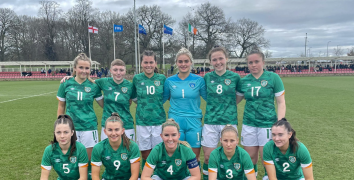
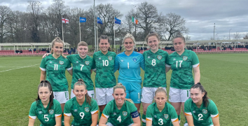

Our Youth Teams
| u21 men | u19 women | u17 men | u17 women |
|---|
Ireland's youth squads are an important aspect of our footballing culture. They allow or youth to grow by playing first team minutes against other upcoming talents across the world. The youth teams have been producing great prospects, with many youth players playing at bigger clubs at younger ages. Evan Ferguson, one of Ireland's greatest prospects at the moment, was playing for the u21s at age 17, to be called to the first team for his debut against Latvia and and competitive debut against France. Ferguson is currently Brighton's starting striker, having found form for the club and helping Brighton with their push for a european place. Stephen Kenny and Vera Pauw watc these squads closely and scout their future talent. Kenny has a particularly good relationship with the squads as he managed the u21s before taking on the senior squad. He also managed many clubs in the League of Ireland, winning titles in the process. Having a good understanding of the league is important when scouting for individuals. Kenny reportedly encouraged young players to move for first team minutes and get out of clubs where they aren't being played. This has led to a lot young players moving to Itlay to play in the first and second division of the league.